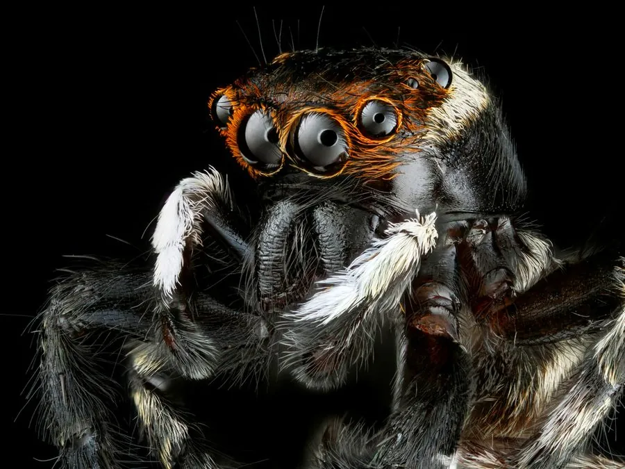

蛛形动物 · 动物界
安德逊蝇虎 Hasarius adansoni

常见于人类居所的跳蛛，雄性黑白分明，不结网而靠敏锐视力和跳跃伏击蚊蝇，对人无害，是室内益虫。
- 分类
- 门节肢动物门纲蛛形纲目蜘蛛目科跳蛛科属蝇虎属
- 栖息环境
- 房屋墙面、窗台、栏杆、树干及农田草丛
- 地理分布
- 全球热带与亚热带地区，中国南方及北方室内均有分布
- 保护级别
- IUCN 暂无评估；中国未列入国家重点保护名录
物种志
安德逊蝇虎体长 5–8 毫米，雌蛛略大于雄蛛。雄蛛体色黑白分明：头胸部黑色，腹部黑色，前端有一条白色新月形横带，触肢末端有白色球状结构；雌蛛通体呈浅褐或灰褐色，斑纹较淡。它长着八只单眼，其中前中眼特别大，视力在节肢动物中名列前茅，能精确判断猎物距离。
它广泛分布于热带和亚热带地区，常出现在房屋墙面、窗台、栏杆、树干和草丛中，不结捕猎网，而是四处游走、跳跃扑食苍蝇、蚊子、小蛾等昆虫，跳跃前会先固定一根蛛丝作为“安全绳”。雄蛛求偶时会举起前足并摆动腹部表演“舞蹈”。雌蛛在缝隙中产卵并守护卵囊，幼蛛孵化后独立生活。安德逊蝇虎不主动咬人，无毒害，是居室里的益虫。
形态与习性
- 食性苍蝇、蚊子、小蛾等小型昆虫
- 体长5–8 mm
- 寿命约 1 年
- 繁殖卵生，雌蛛守护卵囊直到幼蛛孵化
- 活动节律昼行性，靠视力游猎
- 毒性对人无害，不会主动咬人
- 特点跳跃前先分泌一根安全丝固定在原地
趣味知识
- 跳蛛的前中眼特别大，视力在节肢动物中极为出色，能锁定数厘米外的蚊子。
- 它跳跃前会先吐一根丝固定在原地，相当于系上“安全绳”。
- 雄性安德逊蝇虎黑白相间，常举起前足向雌蛛“跳舞”求偶。